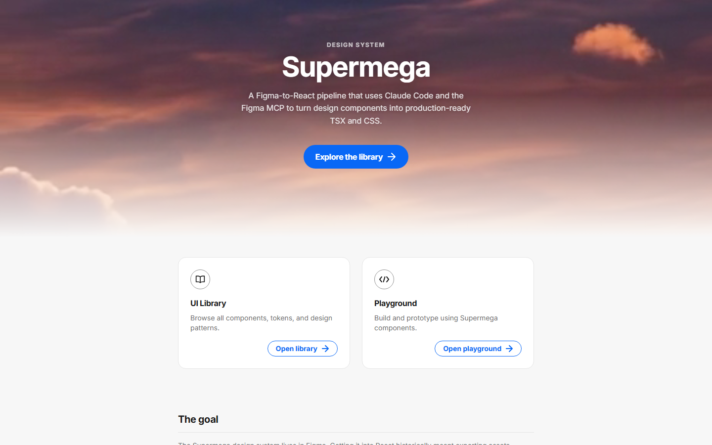

Dashboard
NorthStar
Live economic and financial indicators dashboard powered by FRED data, featuring interactive time-series charts and customizable KPI cards.
I'm a senior product designer with 15 years of experience building data-driven enterprise platforms, analytics dashboards, and scalable design systems for Fortune 500 teams. I specialize in transforming complex datasets into clear, accessible visual interfaces that accelerate stakeholder decision-making. I'm experienced leading cross-functional collaboration with product, engineering, analytics, and AI teams across user research, prototyping, design-to-dev handoff, and production.

Live economic and financial indicators dashboard powered by FRED data, featuring interactive time-series charts and customizable KPI cards.

Rapid campaign creation tool enabling internal analysts to view and find insights with minimal friction.

Interactive design system with component documentation and usage guidelines.

Logo and brand identity for an internal Finance Innovation and Transformation program.

REST API testing tool with a streamlined UI designed for developer productivity and workflow efficiency.

Visual identity for an internal Marketplaces Analytics Program — Elevating Analytics.
Mar 2012 – Feb 2026 · 14 yrs
eBay
Applied design thinking to lead UX and product design for internal enterprise tools supporting finance, analytics, and operational reporting across a 30,000+ employee organization.
Oct 2011 – Mar 2012 · 6 mos
Highwood Design
Sep 2010 – Nov 2011 · 1 yr 3 mos
Joomlashack
EDUCATION 2000 - 2005
University of Louisiana at Lafayette